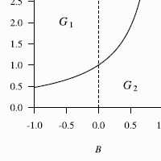

Kauhanen, H. & Walkden, G. (2018) Deriving the Constant Rate Effect. Natural Language & Linguistic Theory, 36(2), 483–521.
The Constant Rate Hypothesis (Kroch, 1989) states that when grammar competition leads to language change, the rate of replacement is the same in all contexts affected by the change (the Constant Rate Effect, or CRE). Despite nearly three decades of empirical work into this hypothesis, the theoretical foundations of the CRE remain problematic: it can be shown that the standard way of operationalizing the CRE via sets of independent logistic curves is neither sufficient nor necessary for assuming that a single change has occurred. To address this problem, we introduce a mathematical model of the CRE by augmenting Yang’s (2000) variational learner with production biases over an arbitrary number of linguistic contexts. We show that this model naturally gives rise to the CRE and prove that under our model the time separation possible between any two reflexes of a single underlying change necessarily has a finite upper bound, inversely proportional to the rate of the underlying change. Testing the predictions of this time separation theorem against three case studies, we find that our model gives fits which are no worse than regressions conducted using the standard operationalization of CREs. However, unlike the standard operationalization, our more constrained model can correctly differentiate between actual CREs and pseudo-CREs – patterns in usage data which are superficially connected by similar rates of change yet clearly not unified by a single underlying cause. More generally, we probe the effects of introducing context-specific production biases by conducting a full bifurcation analysis of the proposed model. In particular, this analysis implies that a difference in the weak generative capacity of two competing grammars is neither a sufficient nor a necessary condition of language change when contextual effects are present.